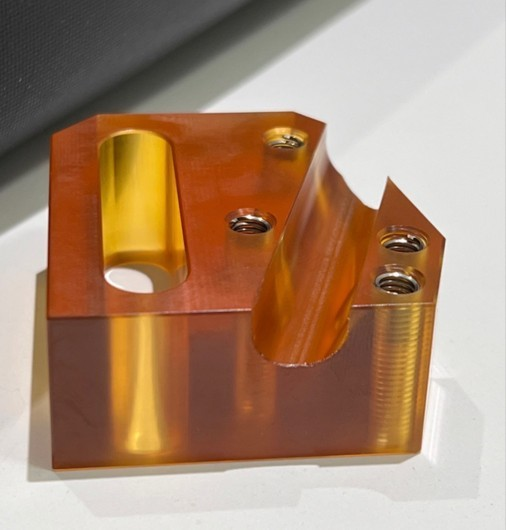

Our shop features 8 total vertical CNC mills, ready to handle your high volume production needs.

Our shop features 8 total vertical CNC mills, ready to handle your high volume production needs.
| Haas VF-3 (x3) | Travel |
|---|---|
| X | 40 in. |
| Y | 26 in. |
| Z | 25 in. |
| Haas VF-2 (x1) | Travel |
|---|---|
| X | 16 in. |
| Y | 12 in. |
| Z | 10 in. |
| Haas VF-4 (x1) | Travel |
|---|---|
| X | 50 in. |
| Y | 20 in. |
| Z | 25 in. |
| Haas Mini Mills (x3) | Travel |
|---|---|
| X | 16 in. |
| Y | 12 in. |
| Z | 10 in. |
Our prototyping process maximizes our shop’s capabilities and capacity to bring your design concepts to life. We work closely alongside your team, using our engineering expertise to recommend refinements and improve manufacturability as needed. Our approach supports both your fast-turnaround machining requirements and need for a high quality product that can be rapidly rolled into production.
All of the abilities and resources of our shop are used in our prototyping method to bring your design ideas to life. We work closely with your team, leveraging our engineering expertise to suggest improvements and improve manufacturability where we can. We deliver a quality product which can be put into production quickly and fulfills your need for rapid turnaround machining.
Once you’re happy with the prototype, we can then scale the part into low or high volume production. Our seasoned experience in the semiconductor industry equips us with the skill to hold even micron-level geometric tolerances and preserve critical dimensions (CDs) across bulk part batches. We are also capable of developing our own custom tooling to improve manufacturability and drastically cut down turnaround time. Reducing costs, waste, and turnaround times are our priority while maintaining rigid quality control procedures.
programming complex machining tasks for 5-axis milling machines across the semiconductor, medical device, and aerospace & defense industries. We work with your manufacturing staff to deliver quality NC codes to keep your machines running and prevent downtime. Our team of talented programmers and engineers have a combined 60+ years of experience.
Semiconductor manufacturing requires parts manufactured at tight tolerances and critical dimensions maintained. Our shop specializes in this type of precision machining, with experience producing components that require tolerances down to ±0.0002". Tight geometric tolerances and critical dimensions can be maintained across production runs, helping ensure parts fit and perform as intended.
Our 5-axis milling capabilities allow complex geometries to be machined with fewer setups, which helps maintain the relationship between critical features. This is especially useful for components with multiple angled surfaces, deep features, or several dimensions that need to stay closely aligned. From prototype components and engineering samples to repeat production, the machining process can be adjusted around the requirements of each part.
A large part of semiconductor machining comes down to consistency. Critical dimensions, surface requirements, and feature locations need to remain stable from one part to the next, particularly when components are being used repeatedly in production equipment. Inspection is performed throughout the process to identify any dimensional changes before they become a larger issue. Our quality processes are based around ISO 9001 requirements, with procedures in place to maintain consistent production and documentation.
Medical and dental parts often require a high level of precision, especially when components need to fit together or maintain consistent dimensions throughout production. Our 5-axis milling capabilities allow complex features and geometries to be machined with fewer setups, helping maintain accuracy between critical surfaces. Prototype work and production quantities can both be accommodated, depending on the requirements of the part.
From medical components and surgical tooling to dental parts and custom fixtures, each job is approached around the material, tolerances, and intended use of the component. Aluminum, stainless steel, titanium, and engineering plastics can be machined for a variety of applications. Complex shapes, angled features, and difficult-to-reach areas can often be handled more efficiently with 5-axis machining.
Consistency becomes especially important when a part moves into production. Critical dimensions are checked during machining and finished parts are inspected against the drawing and specified requirements. Our quality procedures follow ISO 9001 requirements, helping maintain an organized and repeatable process without claiming ISO 9001 certification.
Whether you need a small batch of dental components, prototype medical parts, or a larger production run, the machining process can be scaled to meet the needs of the project. The focus is on producing accurate, repeatable parts while keeping production practical and turnaround times reasonable.
Precision and consistency are crucial when producing machined parts for aerospace and defense applications. Our experience with tight-tolerance components provides a strong foundation for this type of work, where critical dimensions and repeatability are important. Your engineering and manufacturing teams can work directly with our shop to address manufacturing challenges, improve manufacturability, and produce parts according to your specifications.
We provide prototype into production machining, allowing parts to move from an initial design into production without having to find another machining source.
Materials we have experience with:
Aluminum 6061
Aluminum 7075
Stainless Steel 304
Stainless Steel 316
Your components are made with meticulous care throughout the fabrication cycle as we maintain the highest quality standard in our quality control systems, compliant with ISO9001 and AS9100 requirements.
Our machining capabilities are also suited for parts with tight tolerances and detailed features. Critical dimensions are monitored during production and finished components are inspected against your drawings and specifications. Maintaining consistency from one part to the next helps keep production running smoothly and reduces the need for additional adjustments or rework.
Whether the requirement is a single prototype or a larger production run, we produce accurate parts while keeping machining time, material waste, and production costs under control.
Learn More
Production quantities can vary considerably from one project to the next. Some jobs may only require a few dozen parts, while others call for hundreds or more. Our machining process can accommodate both, allowing the same part to move from a short production run into larger quantities as demand increases. Once a part is set up and proven, repeat orders can be produced using the same programs, tooling, and processes to help keep parts consistent.
Short-run machining can also be a practical option when committing to a large quantity does not make sense yet. Parts can be produced as they are needed instead of tying up money in excess inventory, while still using production-grade materials and machining processes. For larger orders, production quantities can be planned around available machine time, tooling, material, and the requirements of the part.
Keeping production consistent becomes more important as the number of parts increases. Tooling, workholding, setups, and inspection all play a role in maintaining the dimensions of each part throughout a run. Our 5-axis milling capabilities can also reduce the number of setups needed on complex parts, helping maintain the relationship between critical features while reducing unnecessary machining time.
From a short run of replacement parts to a larger batch of components, the goal is to keep production moving without sacrificing the accuracy of the finished parts. Quantities can be adjusted around your needs, giving you the flexibility to order what is needed now and increase production when demand calls for it.